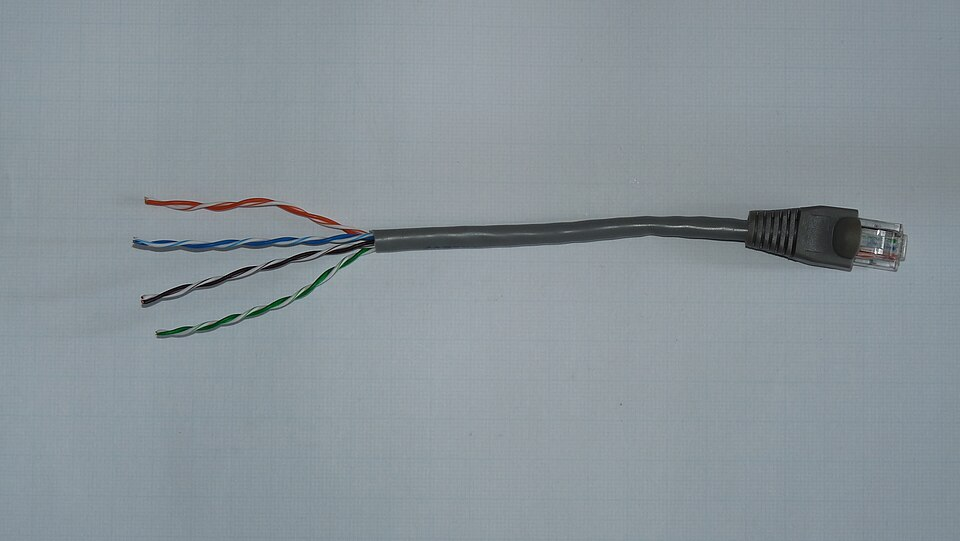
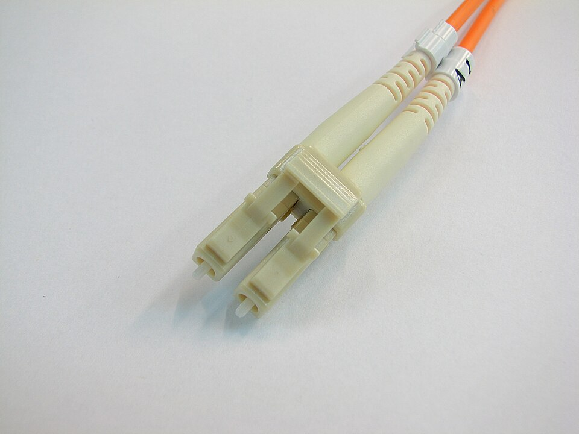
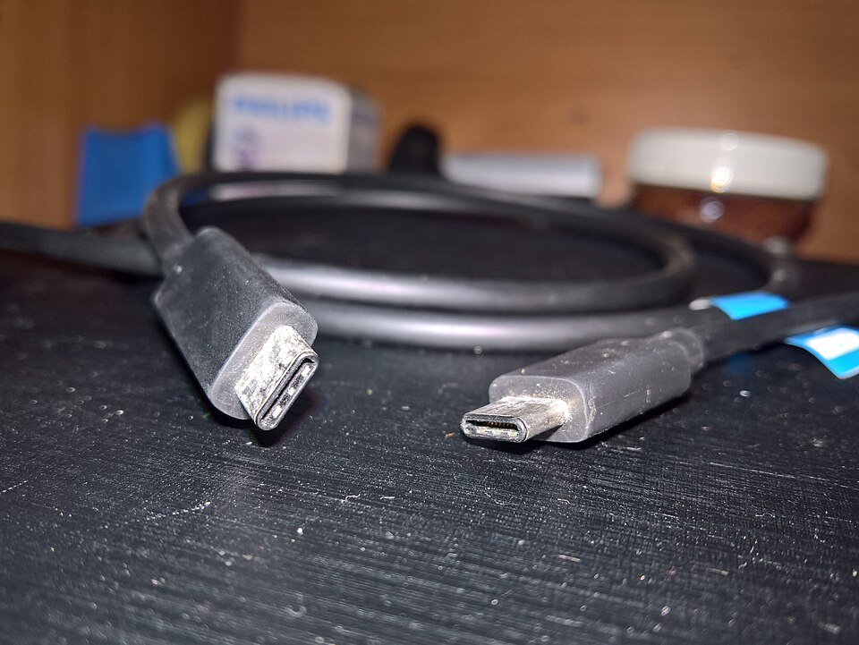
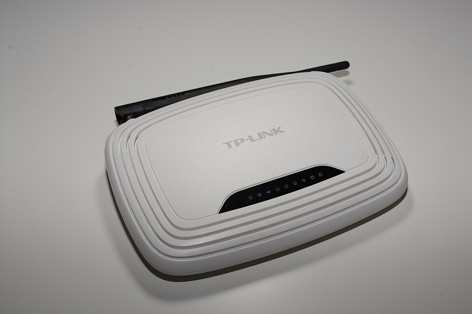
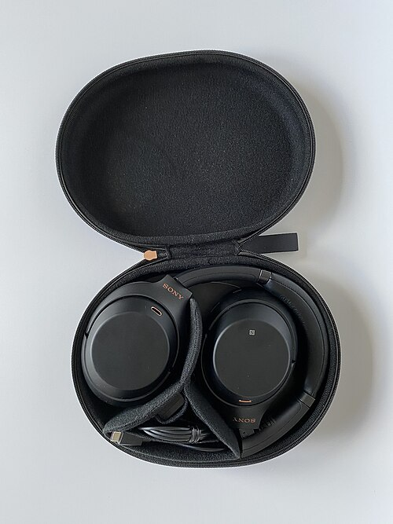
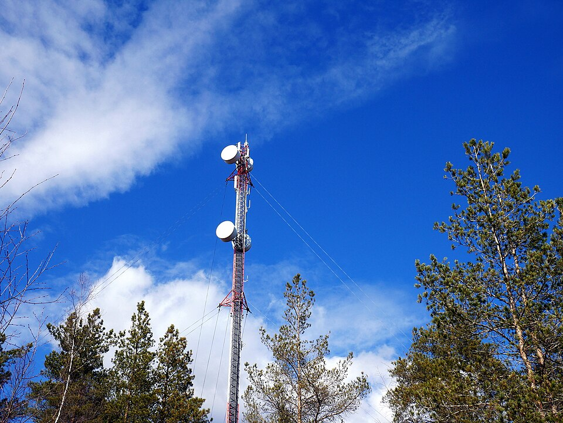

Communication channels and connection methods
How does data get from one device to another?
- Follow the direction of data
- Identify who shares a path
- Choose a connection that fits the task
Start here
Devices need a path for data
A communication channel is a path that carries data from a sender to a receiver.
Listen to a radio station
The station sends. Your radio receives.
One way →Use a staff radio
Each person waits for the other to finish.
Take turns ⇄Make a phone call
Both people can speak and hear at the same time.
Both ways ⇆Different tasks need different channels. Start by asking: who sends, who receives, and when?
Two different questions
Channel or connection method?
Your phone
Your voice →
← Their voice
Your friend's phone
Channel: how can data flow?
The call carries voice data both ways at once.
Both people can speak and hear at the same time.
Method: what connects the devices?
This example uses a mobile network.
Radio signals connect each phone to the network.
The phones connect through the mobile network. The arrows show the direction of voice data during the call.
Which way can data travel?
One direction, taking turns, or both directions at once
Channel direction
Simplex
Data travels in one direction only.
Radio station
Broadcast →
Digital radio
Example: The station broadcasts programmes. The radio receives them; it does not reply on that channel.
A simplex channel has no return direction.
Channel direction
Half-duplex
Both ends can send, but they must take turns.
Staff radio A
A speaks →
← B speaks
Staff radio B
Example: A member of staff holds the talk button. The other person listens, then replies.
Both ends can send. Only one direction is active at a time.
Channel direction
Full-duplex
Both ends can send and receive at the same time.
Office PC
PC sends →
← Switch sends
Network switch
Example: A network switch connects devices on a network. Its Ethernet link to a PC can carry data both ways at the same time.
Full-duplex means at the same time, not merely “both directions”.
Who shares the path?
The arrangement is a separate question from the direction
Channel arrangement
Point-to-point: one link, two devices
One PC
Dedicated link →
← Switch sends
One switch
A point-to-point link joins exactly two devices.
Example: one office PC has its own Ethernet cable to a switch.
Look at this one cable. The switch can have other cables to other PCs.
Channel arrangement
Multi-drop: several devices share one path
A multi-drop link connects several devices to the same communication path.
Controller
One shared cable
The controller asks Meter 1 for a reading. Only Meter 1 replies.
Example: a building controller reads several energy meters on one shared cable. Select a meter to request its reading.
Put the ideas together
One link can have two descriptions
Office PC
Data →
← Switch sends
Network switch
Full-duplex
Both devices can send at the same time.
Point-to-point
This path joins two devices.
Do not choose between these labels. They answer different questions about the same link.
Your turn · Channels
Match the channel to the situation
Read what the devices do. Choose a direction and an arrangement.
A remote sensor
A sensor sends readings to one recorder on a dedicated link. The recorder never sends data back.
Answer guide
Only the sensor sends, so the channel is simplex. The dedicated path joins two devices, so it is point-to-point.
Two staff radios
Only two radios use this link. Either person can speak, but they must wait for the other to finish.
Answer guide
The radios take turns, so the channel is half-duplex. This link is between the two radios.
An office PC
One PC has its own cable to a switch. The PC and switch can send to each other at the same time.
Answer guide
Sending at the same time is full-duplex. This one cable is a point-to-point link.
Energy meters
A controller and four meters share one cable. The controller asks one meter at a time, then waits for its reply.
Answer guide
Requests and replies take turns: half-duplex. Several devices share the cable: multi-drop.
An alert system
One unit sends alerts to several receivers on a shared cable. The receivers do not reply.
Answer guide
The receivers never send back, so this is simplex. Several devices use the same path, so it is multi-drop.
Connection methods
Recognise the equipment and choose a suitable link
Connection methods
A cable, or a wireless link?
Wired
A cable carries the data.
Copper uses electrical signals. Fibre uses light.
Wireless
Radio signals carry the data through the air.
A device can move within the covered area.
Choose for the task. A fixed office PC and a moving handheld scanner do not have the same needs.
Connection method · Wired · A fixed network link
Ethernet over copper
A cable links the device to a network switch. Data travels as electrical signals.


Example
A room of desktop PCs shares files with a local server.
Why it fits
The PCs stay at their desks. A cable gives each PC a link without Wi-Fi radio competition.
Check the limit
A cable must reach each desk. It restricts movement.
Ethernet can also run over fibre. This photograph shows a copper cable.
Connection method · Wired · Light carries the data
Fibre-optic cable
Thin glass or plastic fibres carry data as light.


Example
Two college buildings need a link for large file transfers.
Why it fits
Fibre can carry large amounts of data over long links. Electrical noise does not affect the light signal.
Check the limit
Installation and suitable equipment can cost more. The cable needs careful handling.
Fibre is the cable material. It can carry an Ethernet connection.
Connection method · Wired · Connect a nearby device
USB
A USB cable can transfer data between a computer and a compatible device.


Example
A photographer copies photos from a camera to a laptop.
Why it fits
The camera can transfer its files directly. An internet connection is not needed.
Check the limit
Check the ports and cable. The cable must support data transfer, not only charging.
USB-C names a connector shape. It does not tell you the data speed by itself.
Connection method · Wireless · Join a local network
Wi-Fi
A wireless access point connects nearby devices to the network using radio.


Example
Staff carry scanners around a warehouse.
Why it fits
Staff can move without a cable. Access points can provide coverage across the working area.
Check the limit
Walls, distance and other radio use can reduce performance. Access to the network must be protected.
Typical Wi-Fi uses half-duplex radio: devices take turns quickly. It can still support a two-way video call.
Connection method · Wireless · Link nearby devices
Bluetooth
Bluetooth connects compatible devices over radio, often with low power use.


Example
A student connects headphones to a phone.
Why it fits
The devices are near each other. They can exchange audio without a cable or a Wi-Fi network.
Check the limit
It is not the usual choice for transferring large files across a building. Both devices must support it.
The working range depends on the devices and surroundings. Do not assume one fixed distance.
Connection method · Wireless · Use a mobile network
Cellular data
A phone or modem connects by radio to a mobile network base station. Examples include 4G and 5G.


Example
A maintenance worker sends reports from different outdoor sites.
Why it fits
The worker can connect where there is mobile coverage, even with no local Wi-Fi.
Check the limit
Coverage and signal strength vary. A data service usually has an ongoing cost.
Mobile data and Wi-Fi are different ways for a phone to get network access.
Your turn · Connection methods
Choose the method and its main reason
Use the needs in the situation. Match the method to a reason that supports it.
Fixed office computers
Twelve desktop PCs stay at their desks. Network sockets already reach each desk. Staff often transfer large files to a local server.
Answer guide
Ethernet over copper suits fixed PCs with existing sockets. Each PC gets its own wired link.
Two buildings
Two college buildings are 250 metres apart. A cable route is available. The link must carry large files and pass equipment that creates electrical noise.
Answer guide
Fibre suits a long, high-capacity cable link and is not affected by electrical interference.
Copy photos without internet
A camera and laptop are on the same desk. Both have compatible USB data ports. The photographer needs to copy photos without a network.
Answer guide
USB provides a direct data connection between these nearby compatible devices.
Moving scanners
Workers carry scanners around a warehouse. Installed access points already cover the aisles, and the scanners must reach the stock system.
Answer guide
Wi-Fi uses the existing coverage while workers move. Check coverage in every aisle.
Listen from a phone
A person wants to connect wireless headphones to a nearby phone. Both support Bluetooth. No Wi-Fi network is available.
Answer guide
Bluetooth suits a nearby phone and headphones. A Wi-Fi network is not required.
Send a report from a site
An engineer visits outdoor sites with no local Wi-Fi. Mobile network coverage is available, and reports must be sent before leaving.
Answer guide
Cellular data uses the available mobile network. Check coverage and data costs.
Explain your choice
Connect a feature to a need in the situation
Choose for the task
Find the requirement that matters
There is no best connection for every task. Select a factor to see what to check.
Must the device move?
A handheld scanner moves between shelves.
Use a wireless link so the worker is not tied to a cable.
How much data must move?
An editing team transfers large video files.
Check bandwidth: the amount of data a link can carry each second.
How far must it reach?
Two buildings need to exchange data.
Check the link distance and obstacles. Fibre may suit a long cable route.
What could interrupt the link?
A live stock system must remain available.
Check damaged cables, poor radio coverage and interference: unwanted signals that can disrupt communication.
Who can access the data?
A staff network holds private records.
Restrict access and protect the data. A cable alone does not make a system secure.
What must be paid for?
A small office already has network sockets.
Include equipment, installation and ongoing charges. Reuse suitable equipment where possible.
Build an explanation
Need → feature → benefit
A warehouse needs handheld scanners that stay connected while staff move.
1. Find the need
- Need
Workers must move with their scanners.
- Feature
Next step
- Benefit
Next step
The task tells us that mobility matters.
2. Connect a feature
- Need
Workers must move with their scanners.
- Feature
Wi-Fi connects devices without a cable.
- Benefit
Next step
This feature supports movement around the warehouse.
3. Explain the benefit
- Need
Workers must move with their scanners.
- Feature
Wi-Fi connects devices without a cable.
- Benefit
Use Wi-Fi because staff can keep using the stock system while moving between shelves.
Check coverage in every aisle. A cable would restrict movement.
Quick recap
Check the meaning of your answer
Both ways is not enough
Say whether devices take turns or send at the same time.
Count devices on the path
Point-to-point is one link between two devices. Multi-drop shares one path.
Give a reason from the task
Explain how the chosen method helps this person or organisation.
Wireless does not automatically mean full-duplex. Wired does not automatically mean secure.
Check your understanding
Use the terms, then explain a choice
Quiz
Check the concepts
Answer all five questions, then check your score. Your choices and best score save in this browser so you can revisit the lesson later.
Exam-Style Practice
Explain and justify your choice
Explain your choice. Then compare your answer with the guide.
Draft answers save automatically in this browser.
Question 1
Explain why a full-duplex point-to-point link would be more suitable than a half-duplex shared link for a manager taking live video calls from a fixed office PC.
Show answer guide
- Full-duplex allows sending and receiving at the same time.
- That suits live calls because audio and video move both ways together.
- Point-to-point gives a dedicated path between the devices.
- A half-duplex shared link would create turn-taking or competition for the channel.
Question 2
A college wants to connect handheld barcode scanners used by staff walking around a warehouse. Explain which connection method would be suitable and justify your choice against at least two alternatives.
Show answer guide
- Wi-Fi is suitable because staff need mobility.
- It allows scanners to stay connected while moving around the warehouse.
- A wired Ethernet link avoids competition for the Wi-Fi radio channel, but a cable is impractical for a handheld moving device.
- Bluetooth normally links nearby devices. It would need suitable gateways and coverage to reach this stock system.
- A strong answer may also mention coverage, interference, security, and installation cost.